fieldClim: Use-Case-Workflows für Energiebilanz und Wärmeflussmethoden
Chris Reudenbach
fieldclim-usecase-workflows.rmdZiel dieser Vignette
Diese Vignette gießt die vorhandenen
fieldClim-Beispiele, Vignetten und Hilfetexte in konkrete
Use-Case-Workflows. Sie ist keine allgemeine Mikroklima-Vorlesung. Sie
zeigt, wofür das Paket praktisch genutzt werden kann: Messdaten einer
Mikroklima-Station werden als weather_station-Objekt
organisiert, Strahlungs- und Bodenwärmegrößen werden geprüft, und
Wärmeflussmethoden werden auf derselben Datenbasis nebeneinander
berechnet.
Die vorhandene Paketdokumentation deckt im Kern folgende
Arbeitsbereiche ab: Wetterstationsobjekte, kurz- und langwellige
Strahlung, Solar- und Geländegeometrie, atmosphärische Transmission,
Bodenwärme, Feuchte-, Druck- und Temperaturhilfsfunktionen sowie latente
und sensible Wärmeflussmethoden. Separate Verzeichnisse
examples/, tutorials/ oder demo/
wurden in der Repository-Bestandsaufnahme nicht gefunden; die Beispiele
liegen vor allem in vignettes/, man/,
tests/testthat/ und teilweise direkt in den R-Quellen.
Diese Vignette macht daraus sieben Use Cases:
| Use Case | Frage | Paketbereich |
|---|---|---|
| 0 | Was ist das Arbeitsmodell von fieldClim? |
weather_station, Vignetten, Hilfeseiten |
| 1 | Wie wird ein Stationsdatensatz geladen und geprüft? | Beispieldaten in inst/extdata/
|
| 2 | Wie werden kurz- und langwellige Strahlungsgrößen gelesen und kontrolliert? |
rad_*, Messkomponenten |
| 3 | Wie entsteht aus Strahlung und Bodenwärmestrom verfügbare Energie? | Energie- und Bodenwärmefluss |
| 4 | Warum dient eine manuelle Bulk-Residual-Referenz als Kontrast? | transparente Bilanzrechnung |
| 5 | Wie wird derselbe Datensatz an fieldClim
übergeben? |
build_weather_station() |
| 6 | Wie werden Priestley-Taylor, Bowen, Monin-Obukhov und Penman nebeneinander genutzt? |
turb_flux_calc() und Einzelmethoden |
Notation: Theorie zuerst, Paketnamen danach
Die Vorlesungsfolien verwenden für die bodennahe Energiebilanz die
Größen Q*, B, L und
V. Diese Vignette behält diese Notation im Erklärungsteil
bei. Erst an der Schnittstelle zum Datensatz und zu
fieldClim wird auf Paket- und Spaltennamen gemappt.
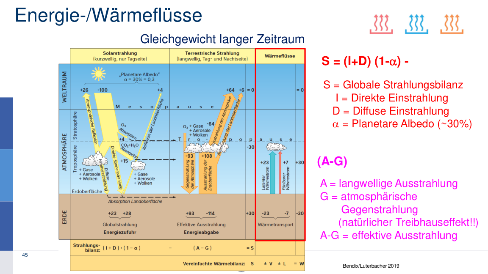
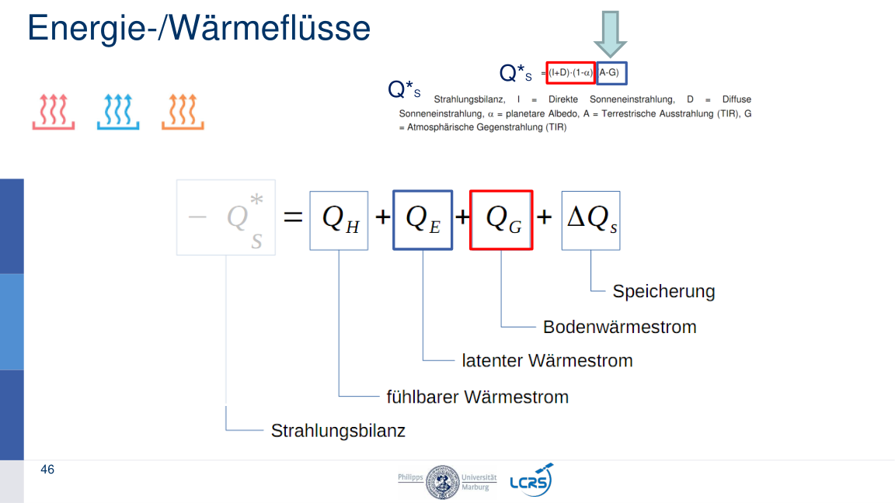
| Theoriegröße | Bedeutung | Code-Variable in dieser Vignette | Feld im Datensatz oder Paket |
|---|---|---|---|
Q* |
Strahlungsbilanz / Netto-Strahlung | Q_star |
rad_net, rad_bal
|
B |
Bodenwärmestrom | B |
heatflux_soil, soil_flux
|
L |
fühlbarer Wärmestrom | L |
sensible_* |
V |
latenter Wärmestrom | V |
latent_* |
S |
Speicherterm | S |
hier nicht separat gemessen |
Die Arbeitsbilanz lautet in der Theorie-Notation:
Der Speicherterm S wird in diesem Lehrdatensatz nicht
separat berechnet. Das bedeutet nicht, dass Speicherung nicht existiert.
Es bedeutet nur, dass die Datengrundlage keine vollständige Auflösung
von Wärmespeicherung in Luftvolumen, Vegetation, Wasserfilmen,
oberflächennahem Boden und Messumgebung erlaubt. Für die transparente
Referenzrechnung wird deshalb gesetzt:
Damit wird:
und für die Residualrechnung:
Der Ausdruck Kontrolle aus Einzelkomponenten ersetzt
hier das missverständliche Wort „Rekonstruktion“. Gemeint ist kein neues
Messverfahren, sondern eine arithmetische Prüfung: Aus kurzwelliger und
langwelliger Bilanz wird eine zweite Zeitreihe für Q*
berechnet und mit der gemessenen Spalte rad_net
verglichen.
Use Case 0: Was soll das Paket leisten?
fieldClim ist kein einzelnes Skript, sondern ein R-Paket
mit mehreren Ebenen. Für die Arbeit mit mikroklimatischen Stationsdaten
ist die zentrale Idee das weather_station-Objekt. Dieses
Objekt bündelt Zeitachse, Standort, Messgrößen und Modellparameter.
Paketfunktionen können damit dieselbe Datenstruktur weiterreichen,
ergänzen und als Tabelle ausgeben.
| Paketebene | Zweck | Beispiele |
|---|---|---|
| Objektstruktur | Messdaten und Parameter bündeln |
build_weather_station(),
as.data.frame()
|
| Strahlung | kurzwellige, langwellige und Netto-Strahlung berechnen oder prüfen |
rad_sw_bal(), rad_lw_bal(),
rad_bal()
|
| Solar- und Geländegeometrie | Sonnenstand, Gelände- und Sichtfaktoren vorbereiten |
sol_*, terr_*
|
| Transmission | atmosphärische Dämpfung der Strahlung beschreiben | trans_* |
| Boden | Wärmeleitfähigkeit, Dämpfung und Bodenwärmestrom behandeln | soil_* |
| Feuchte, Druck, Temperatur | Hilfsgrößen für weitere Berechnungen bereitstellen |
hum_*, pres_*, temp_*
|
| Wärmeflüsse | fühlbare und latente Wärmeflüsse schätzen |
sensible_*, latent_*
|
| Sammelworkflow | mehrere Wärmeflussmethoden in einem Schritt berechnen | turb_flux_calc() |
Die Use Cases unten zeigen nicht jede Einzelfunktion isoliert. Sie ordnen die vorhandenen Funktionsgruppen in Arbeitsabläufe: vom Stationsdatensatz über Strahlung und Bodenwärmestrom bis zu mehreren Wärmeflussmethoden.
Use Case 1: Stationsdaten laden und prüfen
Der Lehrdatensatz enthält einen vollständigen 5-Minuten-Tag der Caldern-Wiese. Ein vollständiger Tag mit 5-Minuten-Zeitschritten hat 288 Messzeitpunkte.
# Das Paket laden.
# Die Vignette setzt voraus, dass fieldClim installiert oder im Paketprojekt verfügbar ist.
library(fieldClim)
# Pfad zur kleinen Paket-Beispieldatei.
# Für eine Paketvignette ist system.file() der passende Weg, weil die Datei
# nach Installation unter inst/extdata/ ausgeliefert wird.
caldern_file <- system.file(
"extdata",
"caldern_wiese_2017-06-30.csv",
package = "fieldClim"
)
# CSV-Datei einlesen.
# Leere Felder, "NULL" und "NA" werden als fehlende Werte behandelt.
caldern <- read.csv(
caldern_file,
na.strings = c("NULL", "NA", "")
)
# Zeitstempel explizit als Datum-Zeit-Werte interpretieren.
# Die Zeitzone ist wichtig, weil Strahlungs- und Tagesganginterpretationen
# zeitabhängig sind.
caldern$datetime <- as.POSIXct(
caldern$datetime,
format = "%Y-%m-%d %H:%M:%S",
tz = "Europe/Berlin"
)
# Anzahl der Zeilen prüfen.
nrow(caldern)
#> [1] 288
# Zeitbereich prüfen.
range(caldern$datetime)
#> [1] "2017-06-30 00:00:00 CEST" "2017-06-30 23:55:00 CEST"
# Zeitschritt prüfen.
summary(diff(caldern$datetime))
#> Time differences in mins
#> Min. 1st Qu. Median Mean 3rd Qu. Max.
#> 5 5 5 5 5 5
# Spaltennamen anzeigen.
names(caldern)
#> [1] "record" "datetime" "Ta_2m" "Huma_2m"
#> [5] "Ta_10m" "Huma_10m" "Windspeed_2m" "Windspeed_10m"
#> [9] "rad_sw_in" "rad_sw_out" "RsNet" "RlNet"
#> [13] "rad_net" "LUpCo" "LDnCo" "water_vol_soil"
#> [17] "Ts" "heatflux_soil" "PCP"Interpretation. Dieser Schritt ist nicht nur Technik. Eine Energiebilanz ist eine Zeitreihenrechnung. Wenn Zeitstempel, Zeitschritt oder Einheiten nicht stimmen, werden alle späteren Flüsse unklar.
Use Case 2: Kurzwellige Strahlung und Albedo
Die Folien zur Strahlung zeigen, dass einfallende kurzwellige Strahlung durch Sonnenstand, optische Weglänge und Transmission bestimmt wird. Die Albedo-Folie definiert den reflektierten Anteil als Verhältnis von ausgehender zu einfallender kurzwelliger Strahlung.
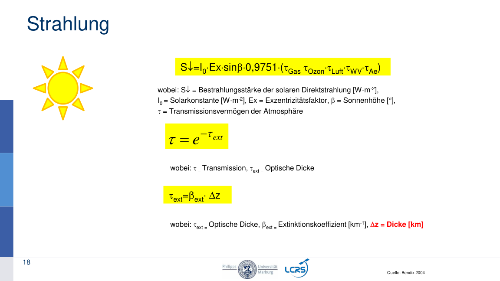
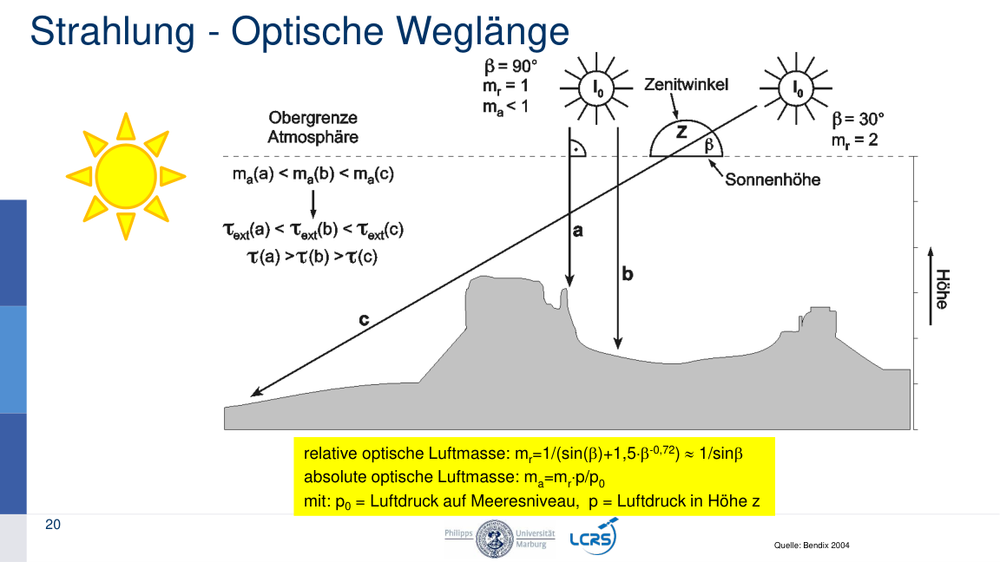
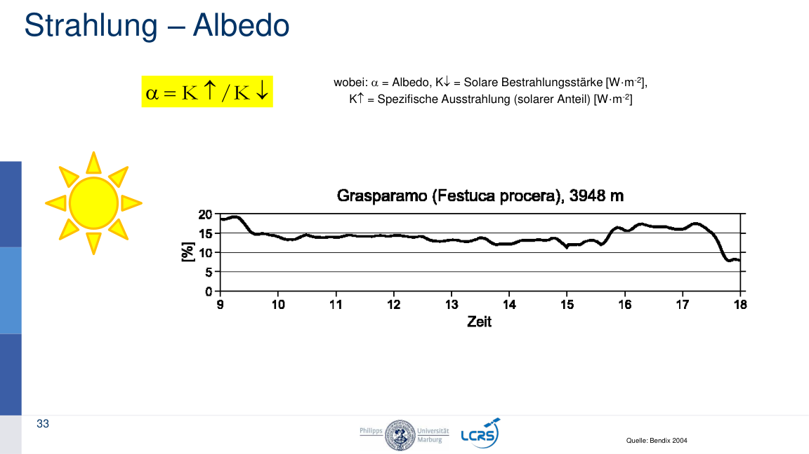
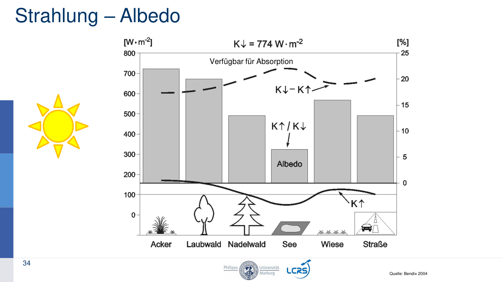
Die kurzwellige Bilanz lautet:
Die Albedo lautet:
# Einfallende kurzwellige Strahlung aus der Messspalte übernehmen.
caldern$K_down <- caldern$rad_sw_in
# Reflektierte kurzwellige Strahlung aus der Messspalte übernehmen.
caldern$K_up <- caldern$rad_sw_out
# Kurzwellige Bilanz berechnen.
# Das ist der kurzwellige Anteil, der nach Reflexion an der Oberfläche bleibt.
caldern$K_star <- caldern$K_down - caldern$K_up
# Albedo berechnen.
# Bei sehr kleiner Einstrahlung ist der Quotient instabil; deshalb wird
# erst ab 50 W/m² gerechnet.
caldern$alpha <- ifelse(
caldern$K_down > 50,
caldern$K_up / caldern$K_down,
NA
)Einzelplots
# Drei Einzelplots übereinander: einfallend, reflektiert, kurzwellige Bilanz.
op <- par(mfrow = c(3, 1), mar = c(3.5, 4, 2, 1))
plot(caldern$datetime, caldern$K_down, type = "l", col = "#D55E00", lwd = 2,
xlab = "Zeit", ylab = "W/m²", main = "K_down: einfallende kurzwellige Strahlung")
plot(caldern$datetime, caldern$K_up, type = "l", col = "#7A7A7A", lwd = 2,
xlab = "Zeit", ylab = "W/m²", main = "K_up: reflektierte kurzwellige Strahlung")
plot(caldern$datetime, caldern$K_star, type = "l", col = "#000000", lwd = 2,
xlab = "Zeit", ylab = "W/m²", main = "K*: kurzwellige Bilanz")
par(op)Interpretation. K_down zeigt den
solaren Tagesantrieb. K_up folgt grundsätzlich diesem
Tagesgang, ist aber deutlich kleiner, weil nur ein Anteil reflektiert
wird. K* zeigt, wie viel kurzwellige Energie nach Reflexion
verbleibt.
plot(caldern$datetime, caldern$alpha, type = "l", col = "#005AB5", lwd = 2,
xlab = "Zeit", ylab = "Albedo [-]", main = "Effektive Albedo")
abline(h = median(caldern$alpha, na.rm = TRUE), lty = 2, col = "grey50")
Interpretation. Die Albedo ist hier kein fixer Materialwert. Sie ist ein gemessener Verhältniswert. Sie schwankt mit Sonnenstand, diffuser Strahlung, Oberflächenstruktur und Feuchte. Bei kleiner Einstrahlung wird sie numerisch instabil; deshalb wurde der Filter gesetzt.
Zusammengesetzter Plot
cols_sw <- c("#D55E00", "#7A7A7A", "#000000")
op <- par(mar = c(6, 4, 3, 1), xpd = NA)
plot(caldern$datetime, caldern$K_down, type = "l", col = cols_sw[1], lwd = 2,
ylim = range(caldern$K_down, caldern$K_up, caldern$K_star, na.rm = TRUE),
xlab = "Zeit", ylab = "W/m²", main = "Kurzwellige Strahlung")
lines(caldern$datetime, caldern$K_up, col = cols_sw[2], lwd = 2)
lines(caldern$datetime, caldern$K_star, col = cols_sw[3], lwd = 2)
legend("bottom", inset = c(0, -0.35), horiz = TRUE, bty = "n",
legend = c("K_down", "K_up", "K*"), col = cols_sw, lty = 1, lwd = 2)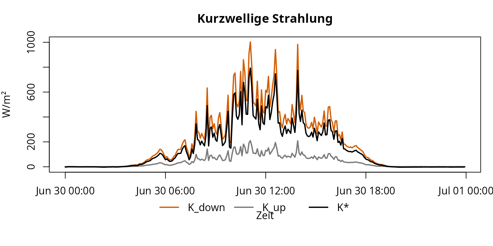
par(op)Interpretation. Der zusammengesetzte Plot zeigt die Bilanzlogik: Die schwarze Linie ist nicht zusätzlich gemessen, sondern aus den beiden kurzwelligen Komponenten berechnet.
Use Case 3: Langwellige Bilanz und Netto-Strahlung Q*
Die Folien zur langwelligen Aus- und Gegenstrahlung beziehen sich auf Stefan-Boltzmann-Logik, Emissionsvermögen und atmosphärische Gegenstrahlung. Für die Stationsdaten wird daraus die langwellige Bilanz.
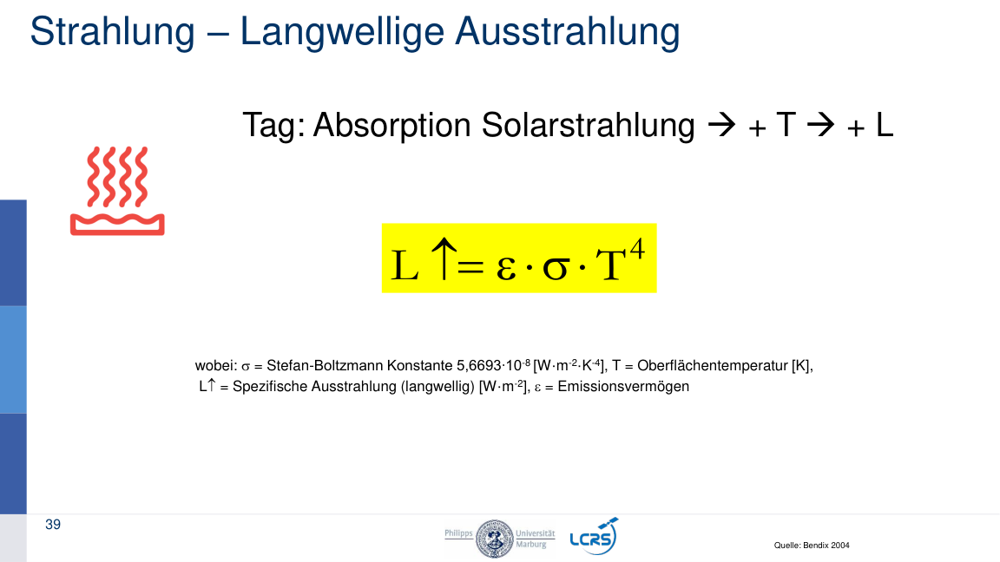
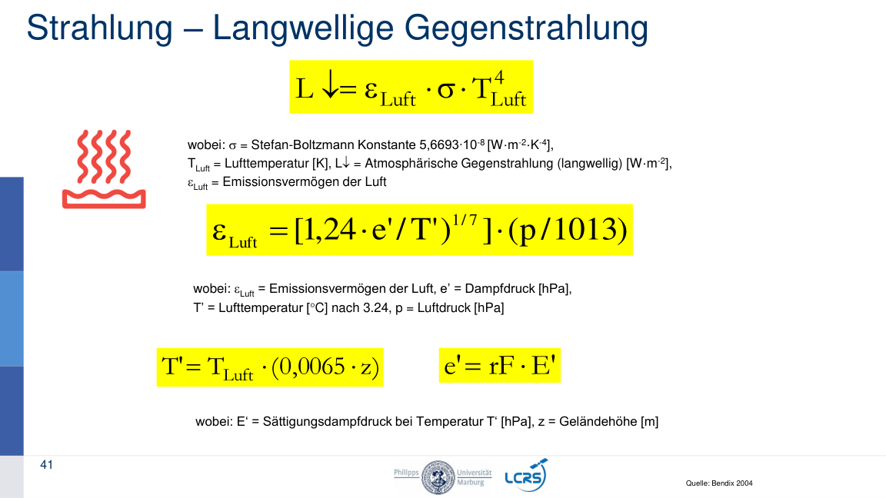
# Langwellige Gegenstrahlung aus der Atmosphäre.
caldern$L_down <- caldern$LDnCo
# Langwellige Ausstrahlung der Oberfläche.
caldern$L_up <- caldern$LUpCo
# Langwellige Bilanz.
caldern$L_star <- caldern$L_down - caldern$L_up
# Netto-Strahlung aus Einzelkomponenten.
# Das ist eine Kontrollrechnung, keine neue Messung.
caldern$Q_star_components <- caldern$K_star + caldern$L_star
# Gemessene Netto-Strahlung aus der Datei.
caldern$Q_star_measured <- caldern$rad_netEinzelplots
op <- par(mfrow = c(3, 1), mar = c(3.5, 4, 2, 1))
plot(caldern$datetime, caldern$L_down, type = "l", col = "#0072B2", lwd = 2,
xlab = "Zeit", ylab = "W/m²", main = "L_down: langwellige Gegenstrahlung")
plot(caldern$datetime, caldern$L_up, type = "l", col = "#CC79A7", lwd = 2,
xlab = "Zeit", ylab = "W/m²", main = "L_up: langwellige Ausstrahlung")
plot(caldern$datetime, caldern$L_star, type = "l", col = "#000000", lwd = 2,
xlab = "Zeit", ylab = "W/m²", main = "L*: langwellige Bilanz")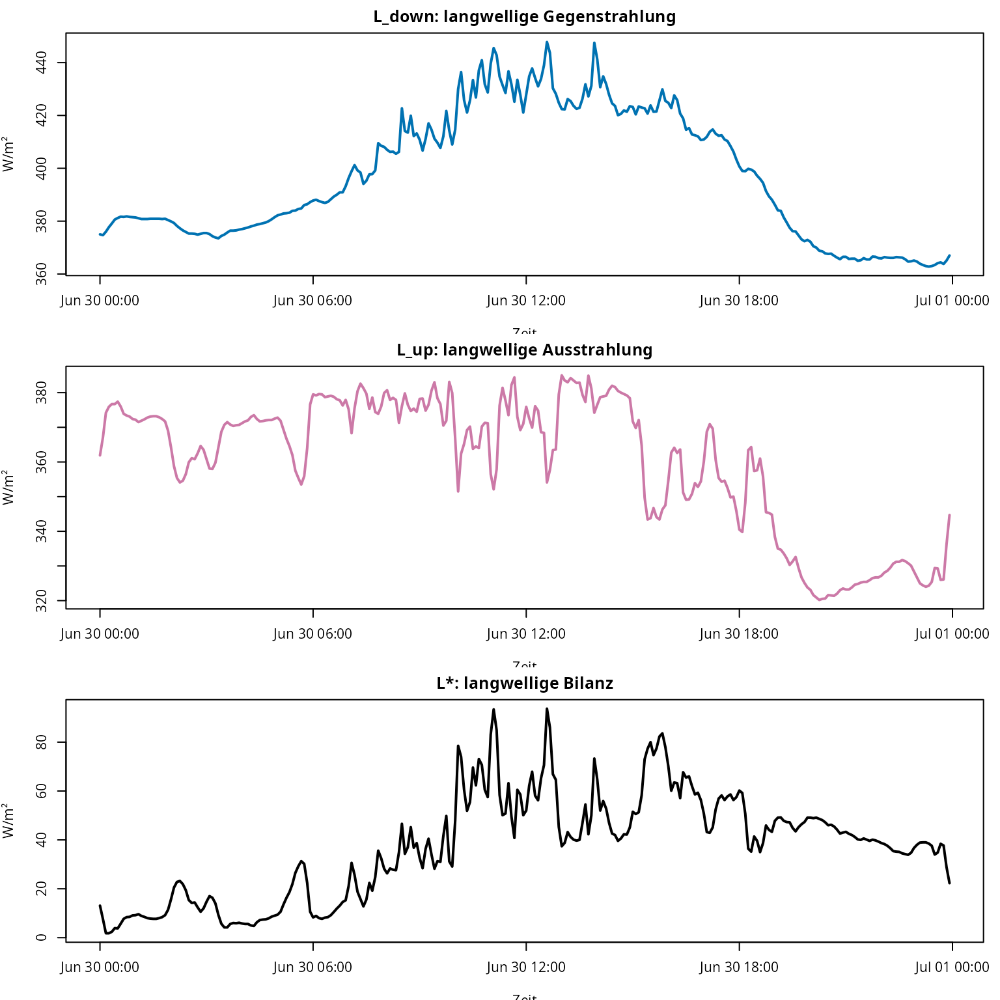
par(op)Interpretation. Die langwelligen Größen variieren weniger sprunghaft als die kurzwellige Einstrahlung. Sie sind stark an Temperatur und Emissionsverhältnisse gekoppelt.
Kontrolle von Q* aus Einzelkomponenten
Die Netto-Strahlung Q* ist der zentrale Eingang in die
Energiebilanz. In der Theorie steht Q* als Strahlungsbilanz
auf der linken Seite der bodennahen Energiebilanz:
In dieser Vignette entspricht:
| Theorie | Datensatz / Paket | Bedeutung |
|---|---|---|
Q* |
rad_net bzw. rad_bal
|
Netto-Strahlung |
B |
heatflux_soil bzw. soil_flux
|
Bodenwärmestrom |
L |
H, sensible_*
|
fühlbarer Wärmestrom |
V |
LE, latent_*
|
latenter Wärmestrom |
Theoretisch kann Q* aus kurzwelligen und langwelligen
Einzelkomponenten gebildet werden:
Im Datensatz liegt aber zusätzlich bereits eine Spalte
rad_net vor. Deshalb wird hier nicht einfach eine neue
Netto-Strahlung “rekonstruiert”, sondern geprüft, ob die vorhandene
Spalte rad_net und die Summe aus Einzelkomponenten dieselbe
Bilanzebene beschreiben.
# Kurzwellige Komponenten:
# K_down ist die einfallende kurzwellige Strahlung.
# K_up ist die reflektierte kurzwellige Strahlung.
caldern$K_down <- caldern$rad_sw_in
caldern$K_up <- caldern$rad_sw_out
# Kurzwellige Bilanz.
caldern$K_star <- caldern$K_down - caldern$K_up
# Langwellige Komponenten:
# L_down ist die atmosphärische Gegenstrahlung.
# L_up ist die langwellige Ausstrahlung der Oberfläche.
caldern$L_down <- caldern$LDnCo
caldern$L_up <- caldern$LUpCo
# Langwellige Bilanz.
caldern$L_star <- caldern$L_down - caldern$L_up
# Vorhandene Netto-Strahlung aus dem Datensatz.
caldern$Q_star_measured <- caldern$rad_net
# Kontrollgröße aus Einzelkomponenten.
# Diese Größe wird hier nur diagnostisch verwendet.
caldern$Q_star_components <- caldern$K_star + caldern$L_star
# Differenz zwischen Komponentensumme und vorhandener Netto-Strahlung.
# Positive Werte bedeuten:
# K* + L* ist größer als rad_net.
caldern$Q_star_difference <- caldern$Q_star_components - caldern$Q_star_measured
summary(caldern$Q_star_difference)
#> Min. 1st Qu. Median Mean 3rd Qu. Max.
#> 3.595 32.331 78.013 74.078 100.515 187.700
cols_q <- c("#000000", "#0072B2")
op <- par(mar = c(6, 4, 3, 1), xpd = NA)
plot(
caldern$datetime,
caldern$Q_star_measured,
type = "l",
col = cols_q[1],
lwd = 2,
ylim = range(caldern$Q_star_measured, caldern$Q_star_components, na.rm = TRUE),
xlab = "Zeit",
ylab = "W/m²",
main = "Q*: vorhandene Netto-Strahlung und Komponentensumme"
)
lines(
caldern$datetime,
caldern$Q_star_components,
col = cols_q[2],
lwd = 2
)
legend(
"bottom",
inset = c(0, -0.35),
horiz = TRUE,
bty = "n",
legend = c("Q* vorhanden: rad_net", "Kontrolle: K* + L*"),
col = cols_q,
lty = 1,
lwd = 2
)
par(op)Interpretation. Die beiden Linien sind nicht
deckungsgleich. Die Komponentensumme K* + L* liegt über
weite Teile des Tages höher als die vorhandene Netto-Strahlung
rad_net. Das ist kein kleiner Rundungseffekt. Es bedeutet:
rad_net und K_down - K_up + L_down - L_up sind
in diesem Datensatz nicht ohne Prüfung als identische Größe zu
behandeln.
Für die weitere Energiebilanz ist das entscheidend. Q*
bestimmt die verfügbare Energie:
Wenn Q* unterschiedlich definiert oder unterschiedlich
verarbeitet ist, ändern sich danach alle Ansätze, die direkt mit
verfügbarer Energie arbeiten. Das betrifft insbesondere die manuelle
Residualrechnung, Priestley-Taylor, Bowen und Penman.
plot(
caldern$Q_star_measured,
caldern$Q_star_components,
pch = 16,
col = rgb(0, 0, 0, 0.35),
xlab = "Q* vorhanden: rad_net [W/m²]",
ylab = "Kontrolle: K* + L* [W/m²]",
main = "Q*: rad_net gegen Komponentensumme"
)
abline(0, 1, lty = 2, col = "grey40")
Interpretation. Wenn beide Größen dieselbe Strahlungsbilanz auf derselben Verarbeitungsstufe wären, müssten die Punkte nahe an der 1:1-Linie liegen. Hier liegt die Punktwolke systematisch oberhalb der 1:1-Linie. Das heißt:
Die Abweichung ist also nicht zufällig um null verteilt. Damit ist
die Komponentensumme keine unproblematische Ersatzgröße für
rad_net.
plot(
caldern$datetime,
caldern$Q_star_difference,
type = "l",
col = "#D55E00",
lwd = 2,
xlab = "Zeit",
ylab = "K* + L* - rad_net [W/m²]",
main = "Differenz zwischen Komponentensumme und rad_net"
)
abline(h = 0, lty = 2, col = "grey40")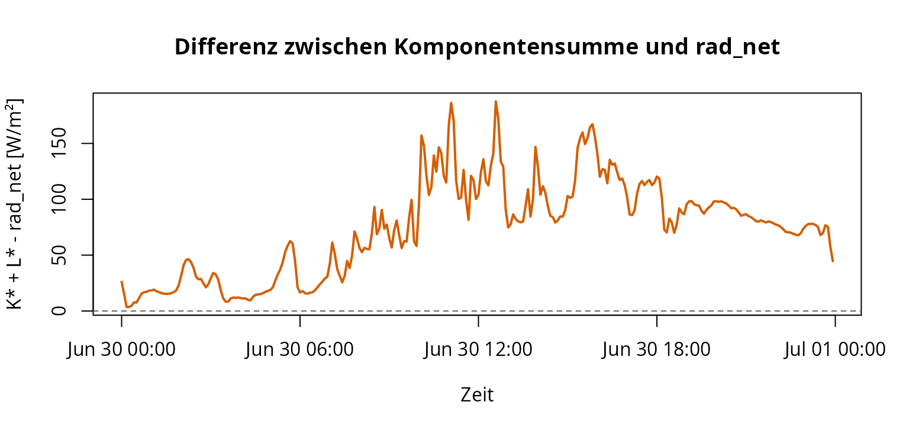
Interpretation. Diese Grafik zeigt, wann die Abweichung entsteht. Wenn die Differenz vor allem tagsüber groß wird, spricht das gegen reine Rundungsfehler. Dann hängt die Abweichung wahrscheinlich mit der Strahlungsverarbeitung zusammen: Sensorberechnung, Loggerkorrektur, unterschiedliche Mittelungsfenster, korrigierte langwellige Größen oder unterschiedliche Vorzeichenlogik.
plot(
caldern$K_down,
caldern$Q_star_difference,
pch = 16,
col = rgb(0, 0, 0, 0.35),
xlab = "K_down [W/m²]",
ylab = "K* + L* - rad_net [W/m²]",
main = "Abweichung in Abhängigkeit vom solaren Antrieb"
)
abline(h = 0, lty = 2, col = "grey40")Interpretation. Wenn die Abweichung mit
K_down zunimmt, ist sie an den solaren Tagesgang gekoppelt.
Dann ist die Komponentensumme nicht nur durch zufällige Messstreuung
anders, sondern wahrscheinlich durch eine andere Definition oder
Verarbeitung der Strahlungskomponenten.
Diese Prüfung entscheidet, welche Strahlungsgröße als Arbeitsgröße verwendet wird. Ohne diese Entscheidung ist der spätere Methodenvergleich nicht interpretierbar, weil Unterschiede zwischen Wärmeflussmethoden dann teilweise aus einer unklaren Netto-Strahlung stammen können.
Priestley-Taylor, Bowen, Penman und die manuelle Residualrechnung hängen direkt an beziehungsweise . Wenn um 100 W/m² verschoben ist, verschiebt sich auch die verfügbare Energie. Bei der Residualrechnung landet der Fehler direkt in . Bei Priestley-Taylor wird die Aufteilung von und skaliert. Bei Bowen wird eine ohnehin gradientenempfindliche Methode zusätzlich mit einer unsicheren Energiemenge gespeist. Bei Penman verschiebt sich der Energieanteil. Die Monin-Wärmeflüsse kommen primär aus Temperatur-, Feuchte-, Windprofil und Stabilitätsannahmen. geht dort nicht in gleicher Weise als direkter Energieterm ein. Aber wir brauchen , um zu prüfen, ob die Monin-Werte energetisch plausibel sind. Wenn selbst unklar ist, kannst bei großen Monin-Werten nicht sauber entschieden werden: Ist der Monin-Ansatz instabil, sind die Gradienten problematisch, oder ist schon die Strahlungsbilanz als Vergleichsmaßstab uneindeutig?
Use Case 4: Bodenwärmestrom und verfügbare Energie
Die Bodenwärme-Folien zeigen den Bodenwärmestrom als
Wärmeleitungsproblem. In den Caldern-Daten wird B direkt
als heatflux_soil verwendet.
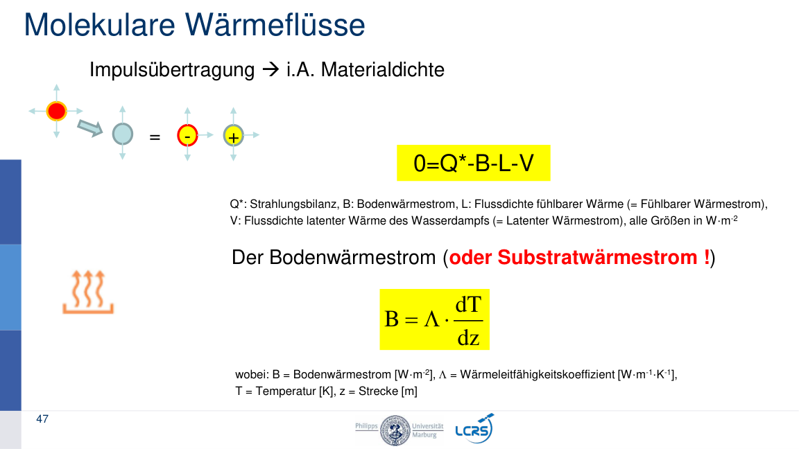
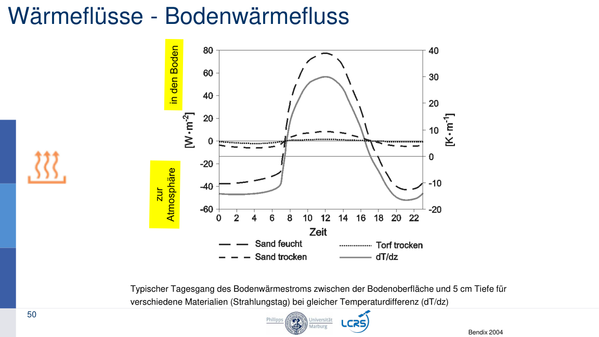
Die verfügbare Energie für fühlbaren und latenten Wärmestrom ist:
# Theoriegröße Q*: gemessene Netto-Strahlung.
caldern$Q_star <- caldern$Q_star_measured
# Theoriegröße B: gemessener Bodenwärmestrom.
caldern$B <- caldern$heatflux_soil
# Energie, die für L und V verfügbar bleibt.
caldern$Q_minus_B <- caldern$Q_star - caldern$BEinzelplots
op <- par(mfrow = c(3, 1), mar = c(3.5, 4, 2, 1))
plot(caldern$datetime, caldern$Q_star, type = "l", col = "#000000", lwd = 2,
xlab = "Zeit", ylab = "W/m²", main = "Q*: Netto-Strahlung")
plot(caldern$datetime, caldern$B, type = "l", col = "#009E73", lwd = 2,
xlab = "Zeit", ylab = "W/m²", main = "B: Bodenwärmestrom")
plot(caldern$datetime, caldern$Q_minus_B, type = "l", col = "#D55E00", lwd = 2,
xlab = "Zeit", ylab = "W/m²", main = "Q* - B: verfügbare Energie")
par(op)Interpretation. Q* ist der radiative
Nettoantrieb. B ist der Anteil, der in den Boden geht oder
aus dem Boden kommt. Q* - B ist die Bilanzgröße, die
anschließend in fühlbaren und latenten Wärmestrom aufgeteilt wird.
Zusammengesetzter Plot
cols_energy <- c("#000000", "#009E73", "#D55E00")
op <- par(mar = c(6, 4, 3, 1), xpd = NA)
plot(caldern$datetime, caldern$Q_star, type = "l", col = cols_energy[1], lwd = 2,
ylim = range(caldern$Q_star, caldern$B, caldern$Q_minus_B, na.rm = TRUE),
xlab = "Zeit", ylab = "W/m²", main = "Q*, B und Q* - B")
lines(caldern$datetime, caldern$B, col = cols_energy[2], lwd = 2)
lines(caldern$datetime, caldern$Q_minus_B, col = cols_energy[3], lwd = 2)
legend("bottom", inset = c(0, -0.35), horiz = TRUE, bty = "n",
legend = c("Q*", "B", "Q* - B"), col = cols_energy, lty = 1, lwd = 2)
par(op)Use Case 5: Manuelle Bulk-Residual-Referenz
Die manuelle Referenz ist bewusst gewählt, weil sie die
Energieflusslogik sichtbar macht, bevor Paketmethoden benutzt werden.
Sie ist kein vollständiges Monin-Obukhov-Verfahren. Sie verwendet nur
eine vereinfachte Bulk-Transfer-Rechnung für L und
berechnet V als Residuum.
Der Bulk-Teil lautet:
mit:
und einem einfachen aerodynamischen Widerstand:
Der Residualteil lautet:
# Konstanten für die vereinfachte Bulk-Rechnung.
rho_air <- 1.225
cp_air <- 1005
z1 <- 2
z2 <- 10
k <- 0.41
# Temperaturdifferenz entsprechend der positiven Flussrichtung.
# Wenn 2 m wärmer ist als 10 m, wird L positiv.
caldern$delta_T_2_10 <- caldern$Ta_2m - caldern$Ta_10m
# Mittlere Windgeschwindigkeit aus den beiden Messhöhen.
caldern$wind_mean <- (caldern$Windspeed_2m + caldern$Windspeed_10m) / 2
# Einfacher aerodynamischer Widerstand.
# Dies ist eine didaktische Vereinfachung und keine vollständige
# Stabilitäts- oder Rauigkeitskorrektur.
caldern$r_a_manual <- log(z2 / z1) / (k * caldern$wind_mean)
# Manuelle Schätzung des fühlbaren Wärmestroms.
caldern$L_bulk <- rho_air * cp_air * caldern$delta_T_2_10 / caldern$r_a_manual
# Latenter Wärmestrom als Residuum der Energiebilanz.
caldern$V_residual <- caldern$Q_star - caldern$B - caldern$L_bulkEinzelplots
op <- par(mfrow = c(2, 1), mar = c(3.5, 4, 2, 1))
plot(caldern$datetime, caldern$L_bulk, type = "l", col = "#CC79A7", lwd = 2,
xlab = "Zeit", ylab = "W/m²", main = "L_bulk: fühlbarer Wärmestrom der manuellen Referenz")
abline(h = 0, lty = 2, col = "grey50")
plot(caldern$datetime, caldern$V_residual, type = "l", col = "#56B4E9", lwd = 2,
xlab = "Zeit", ylab = "W/m²", main = "V_residual: latenter Wärmestrom als Residuum")
abline(h = 0, lty = 2, col = "grey50")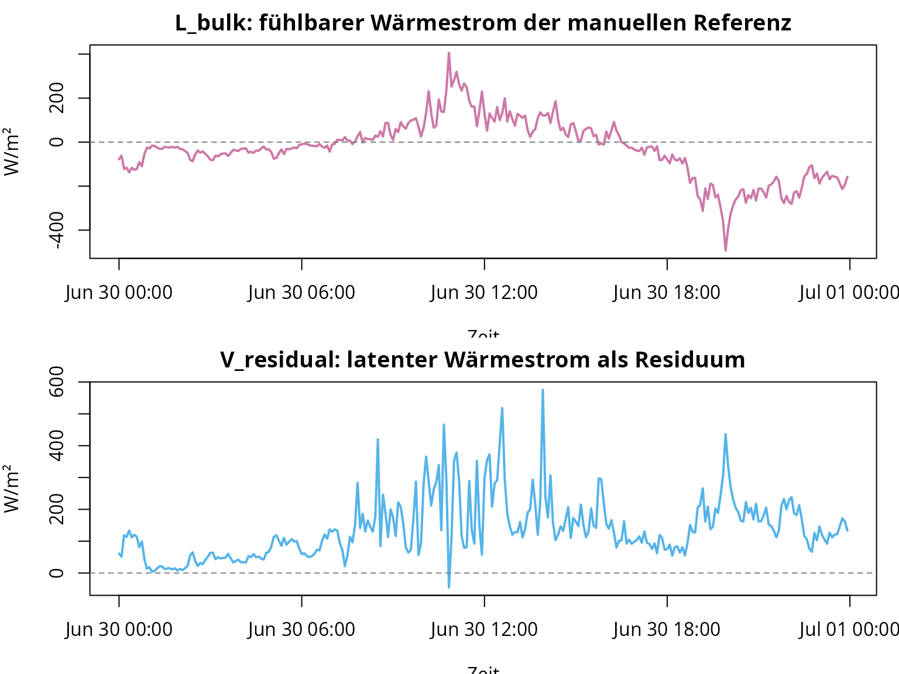
par(op)Interpretation. L_bulk reagiert direkt
auf Temperaturgradient und Wind. V_residual ist kein
unabhängig gemessener Fluss. Es enthält alle nicht durch
Q*, B und L_bulk erklärten
Anteile.
Zusammengesetzter Plot der manuellen Referenz
cols_manual <- c("#D55E00", "#009E73", "#CC79A7", "#56B4E9")
op <- par(mar = c(6, 4, 3, 1), xpd = NA)
plot(caldern$datetime, caldern$Q_minus_B, type = "l", col = cols_manual[1], lwd = 2,
ylim = range(caldern$Q_minus_B, caldern$L_bulk, caldern$V_residual, na.rm = TRUE),
xlab = "Zeit", ylab = "W/m²", main = "Manuelle Bulk-Residual-Referenz")
lines(caldern$datetime, caldern$L_bulk, col = cols_manual[3], lwd = 2)
lines(caldern$datetime, caldern$V_residual, col = cols_manual[4], lwd = 2)
legend("bottom", inset = c(0, -0.35), horiz = TRUE, bty = "n",
legend = c("Q* - B", "L_bulk", "V_residual"),
col = cols_manual[c(1, 3, 4)], lty = 1, lwd = 2)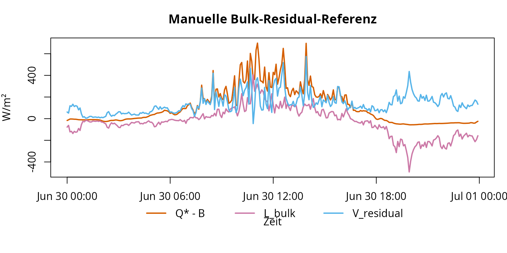
par(op)Use Case 6: Übergabe an das fieldClim-Objekt
Das weather_station-Objekt ist die zentrale
Paketstruktur. Es speichert nicht nur Messspalten, sondern auch Standort
und Modellparameter. Dadurch können verschiedene Funktionen auf dieselbe
strukturierte Datenbasis zugreifen.
ws <- build_weather_station(
# Zeitachse.
datetime = caldern$datetime,
# Standort der Station.
lon = 8.6832,
lat = 50.8405,
elev = 261,
# Standardtemperatur und Standardfeuchte.
temp = caldern$Ta_2m,
rh = caldern$Huma_2m,
# Profilgrößen für gradienten- und stabilitätsbezogene Methoden.
t1 = caldern$Ta_2m,
t2 = caldern$Ta_10m,
hum1 = caldern$Huma_2m,
hum2 = caldern$Huma_10m,
# Windprofil und Messhöhen.
v1 = caldern$Windspeed_2m,
v2 = caldern$Windspeed_10m,
z1 = 2,
z2 = 10,
# Paketnamen für Theoriegrößen:
# rad_bal entspricht Q*, soil_flux entspricht B.
rad_bal = caldern$Q_star,
soil_flux = caldern$B,
# Weitere Oberflächen- und Bodeninformationen.
moisture = caldern$water_vol_soil,
surface_temp = caldern$Ts,
# Oberflächentyp als Modellannahme.
surface_type = "field",
# Beobachtungshöhe für Verfahren, die eine Referenzhöhe brauchen.
obs_height = 2
)
# Klasse und enthaltene Felder prüfen.
class(ws)
#> [1] "weather_station"
names(ws)
#> [1] "datetime" "lon" "lat" "elev" "temp"
#> [6] "rh" "t1" "t2" "hum1" "hum2"
#> [11] "v1" "v2" "z1" "z2" "rad_bal"
#> [16] "soil_flux" "moisture" "surface_temp" "surface_type" "obs_height"
# Als Tabelle ausgeben.
head(as.data.frame(ws))
#> datetime lon lat elev temp rh t1 t2 hum1 hum2
#> 1 2017-06-30 00:00:00 8.6832 50.8405 261 13.09 100.0 13.09 13.60 100.0 97.6
#> 2 2017-06-30 00:05:00 8.6832 50.8405 261 13.01 100.0 13.01 13.51 100.0 97.7
#> 3 2017-06-30 00:10:00 8.6832 50.8405 261 13.02 100.0 13.02 13.66 100.0 96.5
#> 4 2017-06-30 00:15:00 8.6832 50.8405 261 13.16 100.0 13.16 13.76 100.0 96.1
#> 5 2017-06-30 00:20:00 8.6832 50.8405 261 13.27 100.0 13.27 13.80 100.0 96.4
#> 6 2017-06-30 00:25:00 8.6832 50.8405 261 13.69 98.1 13.69 14.25 98.1 92.4
#> v1 v2 z1 z2 rad_bal soil_flux moisture surface_temp surface_type
#> 1 0.448 0.529 2 10 -15.200 1.551533 0.344 16.31 field
#> 2 0.380 0.409 2 10 -8.920 1.492695 0.344 16.29 field
#> 3 0.548 0.670 2 10 -1.965 1.448708 0.344 16.25 field
#> 4 0.581 0.658 2 10 -1.790 1.390439 0.344 16.25 field
#> 5 0.764 0.887 2 10 -2.469 1.325316 0.344 16.22 field
#> 6 0.589 0.744 2 10 -3.857 1.268762 0.344 16.19 field
#> obs_height
#> 1 2
#> 2 2
#> 3 2
#> 4 2
#> 5 2
#> 6 2Interpretation. Das Objekt ist die Übergabeform für das Paket. Es ist nicht nur eine Kopie der CSV-Datei, sondern eine strukturierte Verbindung aus Messdaten und Modellannahmen.
Use Case 7: Paketmethoden für Wärmeflüsse
Priestley-Taylor als erster Paketpfad
Priestley-Taylor nutzt die verfügbare Energie Q* - B und
eine empirische Verdunstungsparametrisierung. Der Vorteil im Einstieg
ist nicht, dass die Methode „wahrer“ wäre, sondern dass sie keine
instabilen Gradientenquotienten benötigt.
# Nur den Priestley-Taylor-Pfad berechnen.
# Dieser Pfad ist als erster Paketvergleich stabiler als der volle Methodenworkflow.
flux_pt <- turb_flux_calc(ws, pt_only = TRUE)
# Ergebnisse zurück in den Auswertungsdatensatz schreiben.
caldern$L_pt <- flux_pt$sensible_priestley_taylor
caldern$V_pt <- flux_pt$latent_priestley_taylor
caldern$L_plus_V_pt <- caldern$L_pt + caldern$V_pt
op <- par(mfrow = c(2, 1), mar = c(3.5, 4, 2, 1))
plot(caldern$datetime, caldern$L_pt, type = "l", col = "#CC79A7", lwd = 2,
xlab = "Zeit", ylab = "W/m²", main = "Priestley-Taylor: L")
abline(h = 0, lty = 2, col = "grey50")
plot(caldern$datetime, caldern$V_pt, type = "l", col = "#56B4E9", lwd = 2,
xlab = "Zeit", ylab = "W/m²", main = "Priestley-Taylor: V")
abline(h = 0, lty = 2, col = "grey50")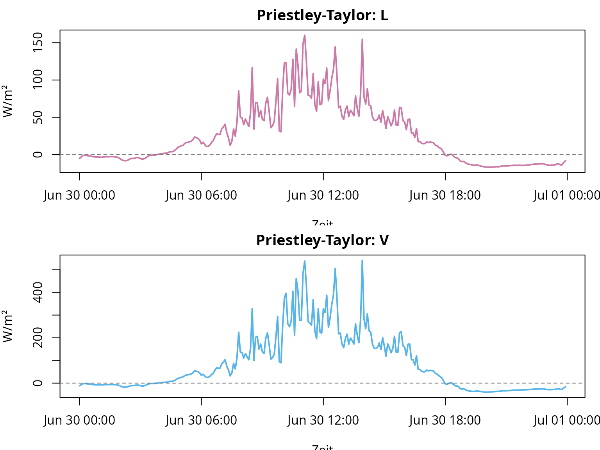
par(op)
cols_pt <- c("#D55E00", "#000000")
op <- par(mar = c(6, 4, 3, 1), xpd = NA)
plot(caldern$datetime, caldern$Q_minus_B, type = "l", col = cols_pt[1], lwd = 2,
ylim = range(caldern$Q_minus_B, caldern$L_plus_V_pt, na.rm = TRUE),
xlab = "Zeit", ylab = "W/m²", main = "Priestley-Taylor: Energieabschluss")
lines(caldern$datetime, caldern$L_plus_V_pt, col = cols_pt[2], lwd = 2)
legend("bottom", inset = c(0, -0.35), horiz = TRUE, bty = "n",
legend = c("Q* - B", "L + V nach PT"), col = cols_pt, lty = 1, lwd = 2)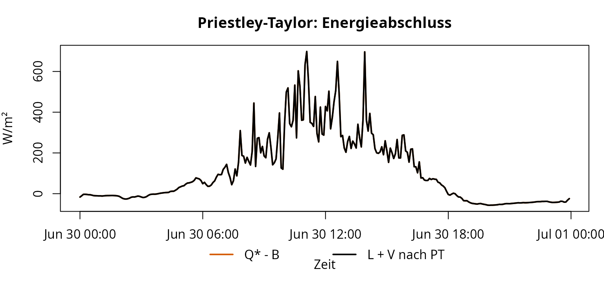
par(op)Interpretation. Der Priestley-Taylor-Pfad schließt in dieser Paketfassung die verfügbare Energie . Dabei ist die Netto-Strahlung und der Bodenwärmestrom. Die Summe aus fühlbarem Wärmestrom und latentem Wärmestrom liegt deshalb auf derselben Energiebasis wie die manuelle Bilanzrechnung.
Das ist der wichtigste didaktische Vorteil dieses Pfads: Die Methode bleibt direkt an die Energiebilanz gekoppelt. Sie erzeugt keine unabhängige Flussgröße aus einem instabilen Gradientenverhältnis, sondern partitioniert die verfügbare Energie. Priestley-Taylor ist damit nicht „wahrer“ als die anderen Methoden, aber als erster Paketpfad kontrollierbarer.
Für die Interpretation heißt das: Wenn oder falsch definiert sind, wird auch Priestley-Taylor falsch skaliert. Der Fehler bleibt aber sichtbar, weil weiterhin gegen geprüft werden kann. Genau deshalb steht die Kontrolle von und vor diesem Methodenvergleich.
Alle Paketmethoden nebeneinander
Die vorhandenen Wärmeflussvignetten und Hilfeseiten zeigen mehrere methodische Familien. Diese Vignette führt sie auf derselben Datenbasis zusammen.
# Alle im Sammelworkflow verfügbaren Methoden berechnen.
# Bowen und Monin-Obukhov können Warnungen erzeugen, weil sie auf Gradienten
# und Stabilitätsannahmen empfindlich reagieren.
flux_all <- turb_flux_calc(ws)
# Ergebnisse in den Datensatz übernehmen.
caldern$L_bowen <- flux_all$sensible_bowen
caldern$V_bowen <- flux_all$latent_bowen
caldern$L_monin <- flux_all$sensible_monin
caldern$V_monin <- flux_all$latent_monin
caldern$V_penman <- flux_all$latent_penman
# Tagesmittelwerte für L.
# Penman wird hier nicht aufgeführt, weil latent_penman() nur V liefert.
L_summary <- data.frame(
Methode = c("manuelle Bulk-Referenz", "Priestley-Taylor", "Bowen", "Monin-Obukhov"),
L_Mittel_W_m2 = c(
mean(caldern$L_bulk, na.rm = TRUE),
mean(caldern$L_pt, na.rm = TRUE),
mean(caldern$L_bowen, na.rm = TRUE),
mean(caldern$L_monin, na.rm = TRUE)
)
)
# Tagesmittelwerte für V.
V_summary <- data.frame(
Methode = c("manuelles Residuum", "Priestley-Taylor", "Bowen", "Monin-Obukhov", "Penman"),
V_Mittel_W_m2 = c(
mean(caldern$V_residual, na.rm = TRUE),
mean(caldern$V_pt, na.rm = TRUE),
mean(caldern$V_bowen, na.rm = TRUE),
mean(caldern$V_monin, na.rm = TRUE),
mean(caldern$V_penman, na.rm = TRUE)
)
)
L_summary
#> Methode L_Mittel_W_m2
#> 1 manuelle Bulk-Referenz -30.82530
#> 2 Priestley-Taylor 25.12080
#> 3 Bowen -21.12343
#> 4 Monin-Obukhov 400.83673
V_summary
#> Methode V_Mittel_W_m2
#> 1 manuelles Residuum 139.51979
#> 2 Priestley-Taylor 83.57368
#> 3 Bowen 129.81791
#> 4 Monin-Obukhov 52.67559
#> 5 Penman 62.81968Interpretation. Die beiden Tabellen zeigen Tagesmittelwerte der berechneten Zeitreihen. Sie sind keine Rangliste der Methoden. Sie zeigen, wie stark sich die Rechenwege bei gleicher Datenbasis unterscheiden.
Beim fühlbaren Wärmestrom fällt zuerst der Unterschied zwischen Priestley-Taylor und Monin-Obukhov auf. Die manuelle Bulk-Referenz liefert im Tagesmittel einen negativen Wert. Das entsteht, weil der einfache Bulk-Ansatz direkt am Temperaturgradienten zwischen 2 m und 10 m hängt. Wenn dieser Gradient über längere Phasen schwach, negativ oder nachts invers ist, schlägt das unmittelbar auf durch. Die manuelle Referenz ist deshalb transparent, aber grob.
Priestley-Taylor liefert dagegen einen moderat positiven Tagesmittelwert für . Das passt zur Rolle dieser Methode im Paket: Sie bleibt an die verfügbare Energie gekoppelt und verteilt diese Energie parametrisiert auf und .
Bowen liegt im Tagesmittel ebenfalls nahe an der manuellen Referenz, aber das ist nicht automatisch ein Qualitätsmerkmal. Bowen kann einzelne extreme Werte erzeugen, die sich im Mittel teilweise wieder ausgleichen. Der Tagesmittelwert allein verdeckt also mögliche Instabilitäten.
Monin-Obukhov ist der auffällige Fall. Der Tagesmittelwert von ist mit etwa 401 W/m² extrem hoch. Das ist für einen Tagesmittelwert aus 5-Minuten-Daten nicht als unkritisch plausibler Wärmefluss zu lesen. Es zeigt, dass dieser Pfad in diesem Datensatz stark auf Profil-, Wind- und Stabilitätsannahmen reagiert.
Beim latenten Wärmestrom liegen manuelles Residuum und Bowen im Tagesmittel relativ hoch, Priestley-Taylor und Penman niedriger, Monin-Obukhov nochmals niedriger. Auch hier gilt: Die Differenzen sind keine Messwahrheiten, sondern Folgen unterschiedlicher Rechenlogiken. Das manuelle Residuum enthält alle Fehler aus , und . Penman liefert nur , keinen eigenen -Wert. Deshalb werden und getrennt tabelliert.
Einzelplots der Paketmethoden
op <- par(mfrow = c(4, 1), mar = c(3.2, 4, 2, 1))
plot(caldern$datetime, caldern$L_bulk, type = "l", col = "#000000", lwd = 2,
xlab = "Zeit", ylab = "W/m²", main = "L: manuelle Bulk-Referenz")
abline(h = 0, lty = 2, col = "grey50")
plot(caldern$datetime, caldern$L_pt, type = "l", col = "#CC79A7", lwd = 2,
xlab = "Zeit", ylab = "W/m²", main = "L: Priestley-Taylor")
abline(h = 0, lty = 2, col = "grey50")
plot(caldern$datetime, caldern$L_bowen, type = "l", col = "#009E73", lwd = 2,
xlab = "Zeit", ylab = "W/m²", main = "L: Bowen")
abline(h = 0, lty = 2, col = "grey50")
plot(caldern$datetime, caldern$L_monin, type = "l", col = "#D55E00", lwd = 2,
xlab = "Zeit", ylab = "W/m²", main = "L: Monin-Obukhov")
abline(h = 0, lty = 2, col = "grey50")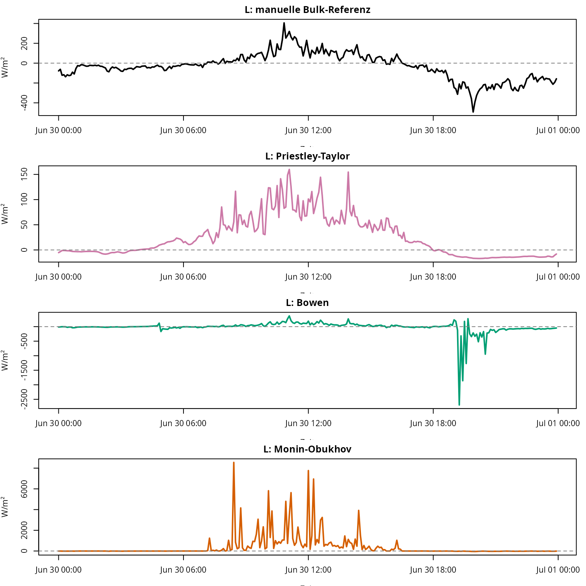
par(op)
op <- par(mfrow = c(5, 1), mar = c(3.2, 4, 2, 1))
plot(caldern$datetime, caldern$V_residual, type = "l", col = "#000000", lwd = 2,
xlab = "Zeit", ylab = "W/m²", main = "V: manuelles Residuum")
abline(h = 0, lty = 2, col = "grey50")
plot(caldern$datetime, caldern$V_pt, type = "l", col = "#56B4E9", lwd = 2,
xlab = "Zeit", ylab = "W/m²", main = "V: Priestley-Taylor")
abline(h = 0, lty = 2, col = "grey50")
plot(caldern$datetime, caldern$V_bowen, type = "l", col = "#009E73", lwd = 2,
xlab = "Zeit", ylab = "W/m²", main = "V: Bowen")
abline(h = 0, lty = 2, col = "grey50")
plot(caldern$datetime, caldern$V_monin, type = "l", col = "#D55E00", lwd = 2,
xlab = "Zeit", ylab = "W/m²", main = "V: Monin-Obukhov")
abline(h = 0, lty = 2, col = "grey50")
plot(caldern$datetime, caldern$V_penman, type = "l", col = "#0072B2", lwd = 2,
xlab = "Zeit", ylab = "W/m²", main = "V: Penman")
abline(h = 0, lty = 2, col = "grey50")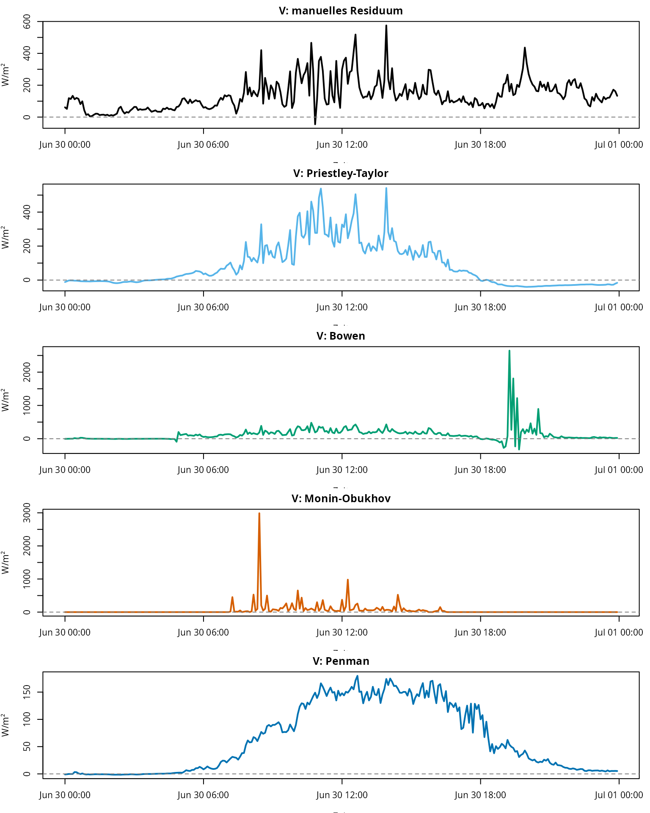
par(op)Interpretation. Die Einzelplots zeigen zuerst jede Methode für sich. Dadurch werden Extremwerte, Vorzeichenwechsel und zeitliche Muster sichtbar, ohne dass Linien sich gegenseitig verdecken.
Konsistenzprüfung der Wärmeflussmethoden
Die folgenden Ergebnisse sind nicht nur ein Methodenvergleich. Sie sind auch eine Konsistenzprüfung der Energiebilanz.
Die Theorie schreibt die bodennahe Energiebilanz als:
mit:
- : Netto-Strahlung bzw. Strahlungsbilanz [W/m²]
- : Bodenwärmestrom [W/m²]
- : fühlbarer Wärmestrom [W/m²]
- : latenter Wärmestrom [W/m²]
Für diese Vignette gilt als Plausibilitätsprüfung:
Diese Beziehung ist keine zusätzliche Methode. Sie prüft, ob die berechneten turbulenten Wärmeflüsse energetisch zur verfügbaren Energie passen. Gerade bei Bowen und Monin-Obukhov ist dieser Schritt notwendig, weil beide Verfahren bei ungünstigen Gradienten oder Stabilitätsbedingungen sehr große Einzelwerte erzeugen können.
# Falls dieser Block isoliert ausgeführt wird, werden die zentralen Arbeitsgrößen
# noch einmal robust gesetzt. Im normalen Ablauf wurden sie vorher bereits erzeugt.
# Q_star ist die verwendete Netto-Strahlung.
if (!("Q_star" %in% names(caldern))) {
if ("Q_star_measured" %in% names(caldern)) {
caldern$Q_star <- caldern$Q_star_measured
} else {
caldern$Q_star <- caldern$rad_net
}
}
# B ist der Bodenwärmestrom.
if (!("B" %in% names(caldern))) {
caldern$B <- caldern$heatflux_soil
}
# Verfügbare Energie:
# Bei B > 0 in den Boden bleibt Q_star - B für L und V verfügbar.
caldern$available_energy <- caldern$Q_star - caldern$B
# Summen aus fühlbarem und latentem Wärmestrom.
# Diese Summen werden mit der verfügbaren Energie verglichen.
caldern$LV_bulk <- caldern$L_bulk + caldern$V_residual
caldern$LV_pt <- caldern$L_pt + caldern$V_pt
caldern$LV_bowen <- caldern$L_bowen + caldern$V_bowen
caldern$LV_monin <- caldern$L_monin + caldern$V_monin
# Abweichungen von Q_star - B.
caldern$diff_bulk <- caldern$LV_bulk - caldern$available_energy
caldern$diff_pt <- caldern$LV_pt - caldern$available_energy
caldern$diff_bowen <- caldern$LV_bowen - caldern$available_energy
caldern$diff_monin <- caldern$LV_monin - caldern$available_energy
# Kompakte Konsistenztabelle.
energy_consistency <- data.frame(
Methode = c(
"Bulk-Residual",
"Priestley-Taylor",
"Bowen",
"Monin-Obukhov"
),
Mittel_L_plus_V = c(
mean(caldern$LV_bulk, na.rm = TRUE),
mean(caldern$LV_pt, na.rm = TRUE),
mean(caldern$LV_bowen, na.rm = TRUE),
mean(caldern$LV_monin, na.rm = TRUE)
),
Mittel_Q_star_minus_B = mean(caldern$available_energy, na.rm = TRUE),
Mittlere_Abweichung = c(
mean(caldern$diff_bulk, na.rm = TRUE),
mean(caldern$diff_pt, na.rm = TRUE),
mean(caldern$diff_bowen, na.rm = TRUE),
mean(caldern$diff_monin, na.rm = TRUE)
),
Max_abs_Abweichung = c(
max(abs(caldern$diff_bulk), na.rm = TRUE),
max(abs(caldern$diff_pt), na.rm = TRUE),
max(abs(caldern$diff_bowen), na.rm = TRUE),
max(abs(caldern$diff_monin), na.rm = TRUE)
)
)
# Zahlen runden, damit die Tabelle lesbar bleibt.
energy_consistency[, -1] <- round(energy_consistency[, -1], 1)
energy_consistency
#> Methode Mittel_L_plus_V Mittel_Q_star_minus_B Mittlere_Abweichung
#> 1 Bulk-Residual 108.7 108.7 0.0
#> 2 Priestley-Taylor 108.7 108.7 0.0
#> 3 Bowen 108.7 108.7 0.0
#> 4 Monin-Obukhov 453.5 108.7 344.8
#> Max_abs_Abweichung
#> 1 0.0
#> 2 0.0
#> 3 0.0
#> 4 11334.9Interpretation. Diese Tabelle ist die zentrale Konsistenzprüfung. Sie vergleicht nicht nur Mittelwerte einzelner Flüsse, sondern prüft, ob die Summe aus fühlbarem und latentem Wärmestrom zur verfügbaren Energie passt.
Die verfügbare Energie ist:
Dabei ist die Netto-Strahlung und der Bodenwärmestrom. Wenn der Speicherterm nicht separat berechnet wird, muss für eine bilanzgebundene Methode näherungsweise gelten:
Die manuelle Bulk-Residual-Referenz erfüllt diese Beziehung konstruktiv. Das ist erwartbar, weil dort als Restgröße berechnet wird:
Priestley-Taylor schließt die Bilanz ebenfalls. Auch das ist erwartbar, weil dieser Paketpfad die verfügbare Energie partitioniert.
Bowen schließt in dieser Tabelle ebenfalls die Energiebilanz. Das bedeutet aber nicht, dass alle Bowen-Einzelwerte unproblematisch sind. Bowen kann die verfügbare Energie formal auf und aufteilen und trotzdem bei einzelnen Zeitpunkten extreme Partitionierungen erzeugen. Deshalb reicht die Konsistenzprüfung allein für Bowen nicht aus; die Extremwerte müssen zusätzlich geprüft werden.
Monin-Obukhov ist der klare Bruch. Im Tagesmittel ergibt etwa 453.5 W/m², während nur etwa 108.7 W/m² beträgt. Die mittlere Abweichung liegt damit bei etwa 344.8 W/m². Die maximale absolute Abweichung ist mit über 11000 W/m² extrem. Das ist kein kleiner Rundungs- oder Darstellungsfehler.
Die Konsequenz ist eindeutig: Der Monin-Obukhov-Pfad liefert in diesem Datensatz einzelne Werte, die energetisch nicht mehr plausibel zur verfügbaren Energie passen. Das kann an kleinen oder verrauschten Gradienten, geringen Windunterschieden, Stabilitätsannahmen oder einer für 5-Minuten-Daten ungeeigneten Anwendung dieses Pfads liegen. Solche Werte sind Diagnosefälle. Sie dürfen nicht als reale mikrometeorologische Wärmeflussereignisse interpretiert werden.
Diagnose auffälliger Bowen- und Monin-Obukhov-Werte
Die Extremwertdiagnose soll nicht alle auffälligen Zeitschritte ausgeben. Sie fasst zuerst zusammen, wo Extremwerte auftreten, und zeigt danach nur die stärksten Fälle.
# Diagnosegrenze für auffällige Einzelwerte.
# Der Wert ist keine harte physikalische Grenze.
# Er dient nur zum Finden sehr großer 5-Minuten-Werte.
threshold_flux <- 600
# Gradienten berechnen.
# Diese Größen helfen zu prüfen, ob Extremwerte mit kleinen oder wechselnden
# Temperatur-, Feuchte- oder Windgradienten zusammenfallen.
caldern$dT_2_10 <- caldern$Ta_2m - caldern$Ta_10m
caldern$dH_2_10 <- caldern$Huma_2m - caldern$Huma_10m
caldern$dU_2_10 <- caldern$Windspeed_2m - caldern$Windspeed_10m
# Lange Diagnosetabelle für Bowen und Monin-Obukhov.
# Diese Tabelle wird nicht vollständig ausgegeben.
extreme_all <- rbind(
data.frame(
datetime = caldern$datetime,
Methode = "Bowen",
Fluss = "L",
Wert = caldern$L_bowen,
dT_2_10 = caldern$dT_2_10,
dH_2_10 = caldern$dH_2_10,
dU_2_10 = caldern$dU_2_10,
Q_star_minus_B = caldern$available_energy
),
data.frame(
datetime = caldern$datetime,
Methode = "Bowen",
Fluss = "V",
Wert = caldern$V_bowen,
dT_2_10 = caldern$dT_2_10,
dH_2_10 = caldern$dH_2_10,
dU_2_10 = caldern$dU_2_10,
Q_star_minus_B = caldern$available_energy
),
data.frame(
datetime = caldern$datetime,
Methode = "Monin-Obukhov",
Fluss = "L",
Wert = caldern$L_monin,
dT_2_10 = caldern$dT_2_10,
dH_2_10 = caldern$dH_2_10,
dU_2_10 = caldern$dU_2_10,
Q_star_minus_B = caldern$available_energy
),
data.frame(
datetime = caldern$datetime,
Methode = "Monin-Obukhov",
Fluss = "V",
Wert = caldern$V_monin,
dT_2_10 = caldern$dT_2_10,
dH_2_10 = caldern$dH_2_10,
dU_2_10 = caldern$dU_2_10,
Q_star_minus_B = caldern$available_energy
)
)
# Nur auffällige Werte behalten.
extreme_cases <- extreme_all[abs(extreme_all$Wert) > threshold_flux, ]
# Zählen, wo Extremwerte auftreten.
extreme_count <- as.data.frame(
table(extreme_cases$Methode, extreme_cases$Fluss),
stringsAsFactors = FALSE
)
names(extreme_count) <- c("Methode", "Fluss", "Anzahl")
extreme_count <- extreme_count[extreme_count$Anzahl > 0, ]
extreme_count
#> Methode Fluss Anzahl
#> 1 Bowen L 4
#> 2 Monin-Obukhov L 47
#> 3 Bowen V 4
#> 4 Monin-Obukhov V 3
# Nur die stärksten Fälle anzeigen, nicht die komplette Tabelle.
if (nrow(extreme_cases) > 0) {
extreme_cases$abs_Wert <- abs(extreme_cases$Wert)
extreme_cases <- extreme_cases[order(-extreme_cases$abs_Wert), ]
extreme_top <- head(extreme_cases, 10)
# Für die Ausgabe runden.
extreme_top$Wert <- round(extreme_top$Wert, 1)
extreme_top$abs_Wert <- round(extreme_top$abs_Wert, 1)
extreme_top$dT_2_10 <- round(extreme_top$dT_2_10, 3)
extreme_top$dH_2_10 <- round(extreme_top$dH_2_10, 3)
extreme_top$dU_2_10 <- round(extreme_top$dU_2_10, 3)
extreme_top$Q_star_minus_B <- round(extreme_top$Q_star_minus_B, 1)
extreme_top
} else {
data.frame(Hinweis = "Keine Werte oberhalb der Diagnosegrenze gefunden.")
}
#> datetime Methode Fluss Wert dT_2_10 dH_2_10 dU_2_10
#> 678 2017-06-30 08:25:00 Monin-Obukhov L 8554.1 0.08 3.28 0.003
#> 721 2017-06-30 12:00:00 Monin-Obukhov L 7766.6 0.30 0.52 -0.028
#> 724 2017-06-30 12:15:00 Monin-Obukhov L 6951.4 0.21 2.47 -0.022
#> 698 2017-06-30 10:05:00 Monin-Obukhov L 5819.1 0.29 2.66 0.037
#> 711 2017-06-30 11:10:00 Monin-Obukhov L 5633.3 0.42 1.38 -0.094
#> 708 2017-06-30 10:55:00 Monin-Obukhov L 4796.9 0.46 1.48 -0.112
#> 682 2017-06-30 08:45:00 Monin-Obukhov L 4160.1 0.23 2.33 -0.031
#> 750 2017-06-30 14:25:00 Monin-Obukhov L 3921.8 0.23 2.58 0.037
#> 700 2017-06-30 10:15:00 Monin-Obukhov L 3864.1 0.25 2.27 0.051
#> 710 2017-06-30 11:05:00 Monin-Obukhov L 3390.9 0.54 0.04 -0.223
#> Q_star_minus_B abs_Wert
#> 678 207.7 8554.1
#> 721 428.4 7766.6
#> 724 318.2 6951.4
#> 698 498.7 5819.1
#> 711 554.5 5633.3
#> 708 362.4 4796.9
#> 682 275.1 4160.1
#> 750 221.3 3921.8
#> 700 343.9 3864.1
#> 710 698.2 3390.9Interpretation. Die Extremwertzählung zeigt, dass die auffälligen Werte nicht gleichmäßig über alle Methoden verteilt sind. Bowen erzeugt nur wenige Extremwerte: vier bei und vier bei . Monin-Obukhov erzeugt dagegen 47 Extremwerte bei , aber nur drei bei . Das Problem liegt hier also vor allem im fühlbaren Wärmestrom des Monin-Obukhov-Pfads.
Die Top-10-Tabelle bestätigt das. Alle stärksten Extremwerte stammen aus Monin-Obukhov und betreffen . Die Werte liegen zwischen etwa 3390 und 8550 W/m². Gleichzeitig liegt die verfügbare Energie an diesen Zeitpunkten nur zwischen etwa 208 und 698 W/m². Diese Größenordnung passt nicht zusammen. Ein fühlbarer Wärmestrom von mehreren tausend W/m² ist unter diesen Energierandbedingungen nicht plausibel.
Auffällig sind außerdem die Gradienten. Die Temperaturdifferenzen zwischen 2 m und 10 m sind in den stärksten Fällen klein: häufig nur etwa 0.1 bis 0.5 K. Auch die Winddifferenzen zwischen 2 m und 10 m sind klein und wechseln teilweise das Vorzeichen. Genau solche Situationen sind für profil- und stabilitätsbasierte Verfahren problematisch. Kleine Gradienten oder kleine Windprofilunterschiede können in Formeln, die aus diesen Größen Stabilität oder Austausch ableiten, stark verstärkt werden.
Bei Bowen ist die Logik anders. Dort sind Extremwerte besonders dann zu erwarten, wenn Temperatur- und Feuchtegradienten ein ungünstiges Verhältnis bilden oder ein Nenner der Energieaufteilung nahe null liegt. Die geringe Anzahl der Bowen-Extremwerte zeigt: Bowen ist in diesem Datensatz nicht durchgehend instabil, kann aber einzelne problematische 5-Minuten-Zeitschritte erzeugen.
Für Monin-Obukhov ist der Befund härter. Die hohe Zahl extremer -Werte und die sehr großen Top-Werte sprechen dafür, dass dieser Pfad mit den vorliegenden 5-Minuten-Profilgrößen nicht robust läuft. Das kann ein Datenproblem sein, ein Gradientenproblem, ein Stabilitätsproblem oder eine Kombination daraus. Mit diesem Datensatz sollte Monin-Obukhov deshalb nicht als belastbarer Ergebnisfluss verwendet werden, sondern nur als Diagnose dafür, wie empfindlich ein komplexerer Profilansatz reagieren kann.
# Zeitreihen der Abweichung von Q_star - B darstellen.
# Werte nahe null bedeuten: L + V passt zur verfügbaren Energie.
# Große Ausschläge zeigen methodische oder datenseitige Inkonsistenzen.
cols_diff <- c(
"#000000",
"#CC79A7",
"#009E73",
"#D55E00"
)
ylim_diff <- quantile(
c(
caldern$diff_bulk,
caldern$diff_pt,
caldern$diff_bowen,
caldern$diff_monin
),
probs = c(0.02, 0.98),
na.rm = TRUE
)
op <- par(mar = c(6, 4, 3, 1), xpd = NA)
plot(
caldern$datetime,
caldern$diff_bulk,
type = "l",
col = cols_diff[1],
lwd = 2,
ylim = ylim_diff,
xlab = "Zeit",
ylab = "(L + V) - (Q* - B) [W/m²]",
main = "Energetische Konsistenz der Methoden"
)
lines(caldern$datetime, caldern$diff_pt, col = cols_diff[2], lwd = 2)
lines(caldern$datetime, caldern$diff_bowen, col = cols_diff[3], lwd = 2)
lines(caldern$datetime, caldern$diff_monin, col = cols_diff[4], lwd = 2)
abline(h = 0, lty = 2, col = "grey50")
legend(
"bottom",
inset = c(0, -0.35),
horiz = TRUE,
bty = "n",
legend = c("Bulk-Residual", "Priestley-Taylor", "Bowen", "Monin-Obukhov"),
col = cols_diff,
lty = 1,
lwd = 2
)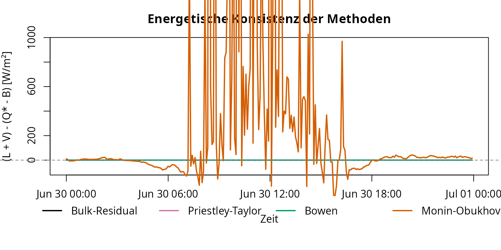
par(op)Interpretation. Die Nulllinie zeigt energetische Konsistenz mit . Die manuelle Bulk-Residual-Referenz liegt erwartungsgemäß nahe an dieser Linie, weil als Rest berechnet wurde. Priestley-Taylor sollte ebenfalls eng an der verfügbaren Energie liegen. Bowen und Monin-Obukhov können deutlichere Ausschläge zeigen. Diese Ausschläge sind Hinweise auf Gradienten- oder Stabilitätsempfindlichkeit, nicht automatisch auf reale mikrometeorologische Ereignisse.
Konsequenz für den Methodenvergleich
Die extremen Werte bei Bowen und Monin-Obukhov können an den Daten liegen, an den Gradienten oder an den Annahmen der Methode. Mit diesem Datensatz lässt sich das nicht durch einen Plot allein entscheiden. Deshalb gilt:
- Die manuelle Bulk-Residual-Referenz ist der transparente Kontrollweg.
- Priestley-Taylor ist der stabile erste Paketpfad.
- Penman ist ein zusätzlicher Vergleich für , aber liefert hier kein eigenes .
- Bowen und Monin-Obukhov sind Diagnosemethoden, keine unkommentierte Einstiegslösung.
- Große Ausschläge müssen immer gegen Messdaten, Gradienten und geprüft werden.
Komplexere Methoden liefern nicht automatisch robustere Ergebnisse. Sie machen zusätzliche Annahmen sichtbar. Genau deshalb werden die Methoden hier nebeneinander dargestellt und nicht als austauschbare Antworten behandelt.